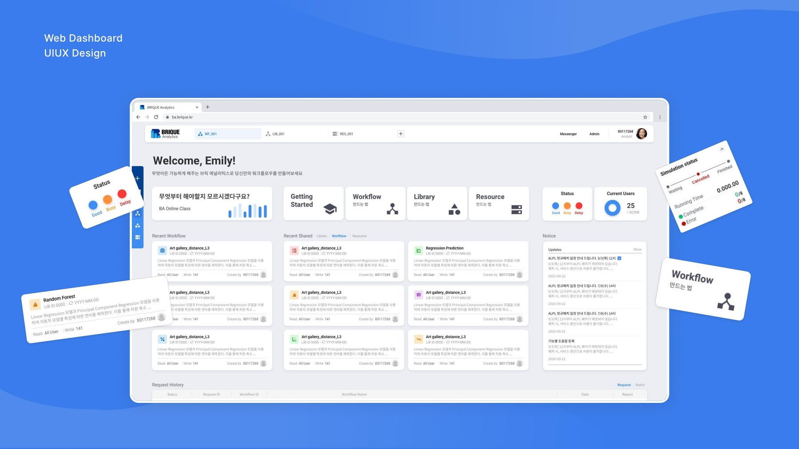
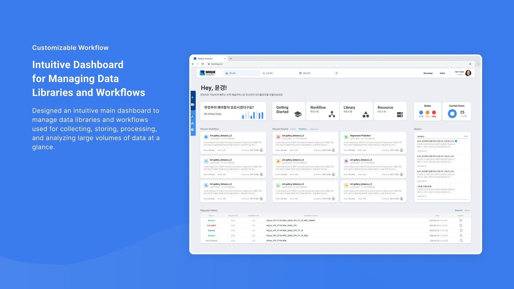
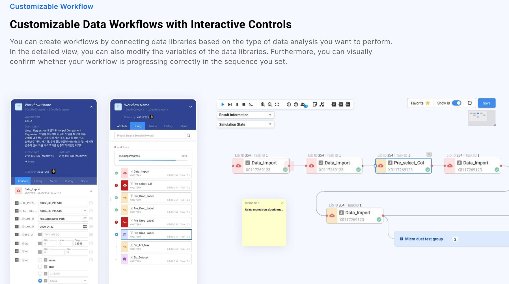
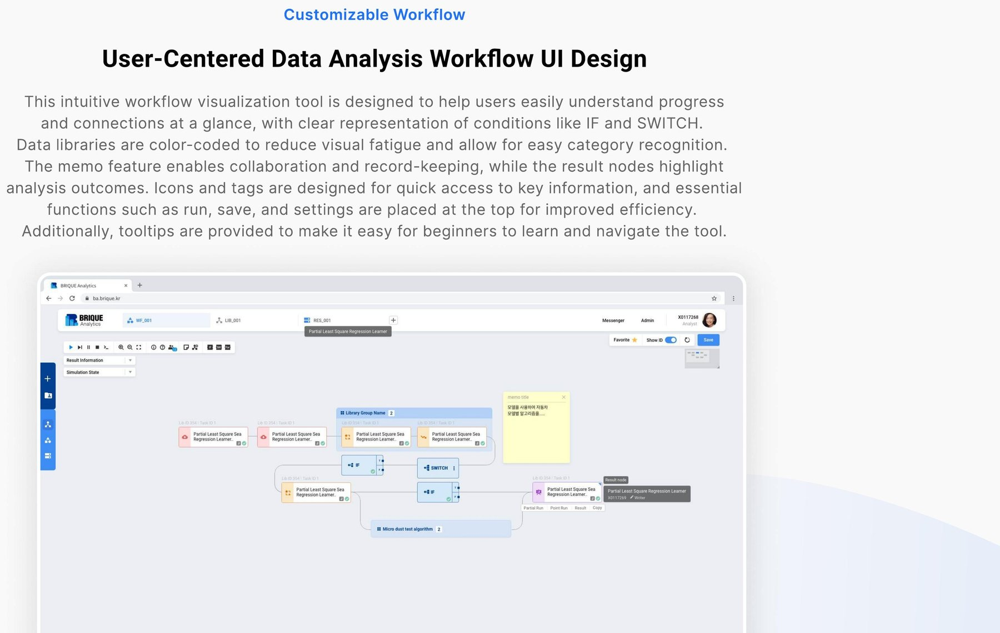

Designing an internal data-analytics platform that turns complex workflows into something analysts actually want to use.

I designed Analytics Dashboard Service, BRIQUE's in-house data-analytics platform, sold to large manufacturers including Samsung Electronics and SK hynix. The product helps internal data analysts build workflows, manage data libraries, and visualize large datasets — without needing to write code.

"Data analysis tools don't have to feel like
spreadsheets from a decade ago."
As a data-analytics platform, providing an easy-to-use UI/UX was a significant challenge due to its sheer number of features. Deciding which data to surface and which to omit — out of a vast amount available — was a constant balancing act.
We also wanted the product to feel different from the dark, dense, spreadsheet-like tools analysts were already tired of. Above all, the design prioritized convenience, so the everyday work of connecting and cleaning data would feel less like a chore.
Normally, data analysis tools are complex and difficult to use. I focused on making the experience simple and engaging, while making sure users could quickly grasp their data at a glance — connecting data libraries visually rather than through code.

Users can create workflows by connecting data libraries based on the type of analysis they want to perform, modify variables in a detailed view, and visually confirm that the workflow is progressing in the sequence they set.
An intuitive main dashboard helps analysts manage the data libraries and workflows used for collecting, storing, processing, and analyzing large volumes of data at a glance.
Data libraries are color-coded by each stage of analysis so their category is recognizable at a glance, and achievement-based elements were added to keep the process of connecting libraries dynamic and visually engaging.
Conditions like IF and SWITCH, memo notes for collaboration, and result nodes that highlight outcomes are all represented visually, so progress and connections are understandable at a glance rather than buried in logs.
Essential functions such as run, save, and settings sit at the top for quick access, and tooltips guide first-time users through the tool without needing a manual.

This intuitive workflow visualization tool was designed to help users easily understand progress and connections at a glance, with icons and tags designed for quick access to key information throughout the analysis process.
This solution is currently used by Samsung and SK Hynix, who were already weary of the dark, dull internal systems they'd been using. By incorporating more vibrant colors rather than the usual black-and-white schemes they were used to, we captured users' attention at first glance — and the approach also gave BRIQUE a more scalable product to build on going forward.
Designing for data analysts taught me that "powerful" and "usable" aren't opposites — they just require ruthless prioritization of what actually needs to be on screen at any given moment.